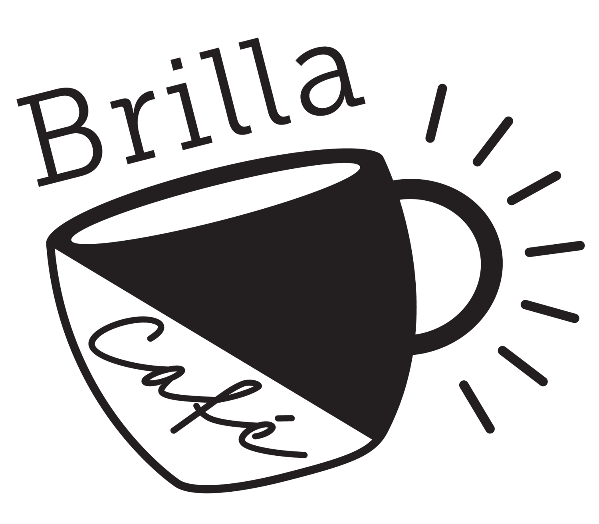

This site was a collaboration with Daniel Martínez to make a place on the web for Carlos Martínez Núñez to post his research papers and for people to get to know him better. He wanted a fun site that felt personal while still maintaining a professional feel to it, so we opted to use complementary colours in the site with some “unusual fonts” to accomplish this. Daniel and I both learned a lot with this project, and were proud to present it to Carlos. This project used HTML, CSS, and JS, and was deployed using GitHub and Hostinger.
This project was a collaboration with Daniel Martínez to make an online presence for Brilla Café, so as to extend the reach of the shop’s influence. Brilla wanted a website that kept with the artisan vibe that the shop gave off, so we stuck with monochromatic shades of brown (representing coffee). Incorporating the same theme throughout the whole project (that matched the theme of the coffee shop) was challenging in the best way. The project was made with HTML, CSS, and JS, and was deployed via GitHub and InMotion Hosting.
